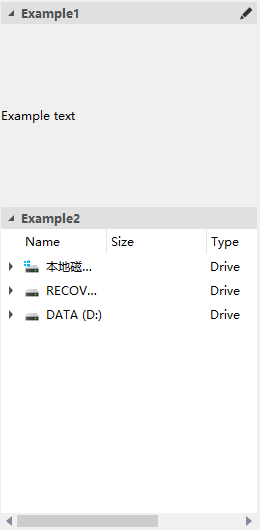

QCtmDrawerItemWidget Class
抽屉窗口 QCtmDrawerWidget 的抽屉项. More...
| Header: | #include <QCtmDrawerItemWidget.h> |
| Inherits: | QWidget |
Public Functions
| QAction * | actionAt(int index) |
| QAction * | addAction(const QIcon &icon, const QString &text) |
| QAction * | addAction(const QIcon &icon) |
| QAction * | addAction(const QString &text) |
| int | count() const |
| const QSize & | iconSize() const |
| int | indexOf(QAction *action) |
| QAction * | insertAction(int index, const QIcon &icon, const QString &text) |
| QAction * | insertAction(int index, const QString &text) |
| bool | isExpand() const |
| void | removeAction(QAction *action) |
| void | setExpand(bool expand) |
| void | setIconSize(const QSize &size) |
| void | setTitle(const QString &title) |
| void | setWidget(QWidget *widget) |
| QString | title() const |
| QWidget * | widget() const |
Signals
| void | expandChanged(bool expand) |
| void | iconSizeChanged(const QSize &size) |
| void | titleClicked(bool expand) |
Protected Functions
| QCtmDrawerItemWidget(const QString &title, QCtmDrawerWidget *parent) | |
| virtual | ~QCtmDrawerItemWidget() |
Detailed Description
抽屉窗口的截图，抽屉项为其中一栏:

Member Function Documentation
[protected] QCtmDrawerItemWidget::QCtmDrawerItemWidget(const QString &title, QCtmDrawerWidget *parent)
构造一个标题为 title, 父窗口为 parent 的抽屉窗口.
[signal] void QCtmDrawerItemWidget::expandChanged(bool expand)
当抽屉项的扩展状态发生变化时，发送该信号 expand.
See also QCtmDrawerItemWidget::titleClicked.
[signal] void QCtmDrawerItemWidget::iconSizeChanged(const QSize &size)
当Action的图标大小发生改变时发送该信号 size.
Note: Notifier signal for property iconSize.
See also QCtmDrawerItemWidget::setIconSize.
[signal] void QCtmDrawerItemWidget::titleClicked(bool expand)
当抽屉项的标题栏被点击时发送该信号 expand.
See also QCtmDrawerItemWidget::expandChanged.
[virtual protected] QCtmDrawerItemWidget::~QCtmDrawerItemWidget()
销毁该抽屉项对象.
QAction *QCtmDrawerItemWidget::actionAt(int index)
返回 index 位置的Action.
See also indexOf.
QAction *QCtmDrawerItemWidget::addAction(const QIcon &icon, const QString &text)
在标题栏上添加一个图标为 icon 文本为 text 的Action.
See also insertAction and removeAction.
QAction *QCtmDrawerItemWidget::addAction(const QIcon &icon)
This function overloads addAction.
在标题栏上添加一个图标为 icon 的Action.
See also insertAction and removeAction.
QAction *QCtmDrawerItemWidget::addAction(const QString &text)
This function overloads addAction.
在标题栏上添加一个文本为 text 的Action.
See also QCtmDrawerItemWidget::addAction and removeAction.
int QCtmDrawerItemWidget::count() const
返回Action的数量.
const QSize &QCtmDrawerItemWidget::iconSize() const
返回Action的大小.
Note: Getter function for property iconSize.
See also setIconSize.
int QCtmDrawerItemWidget::indexOf(QAction *action)
返回 action 的位置.
See also actionAt.
QAction *QCtmDrawerItemWidget::insertAction(int index, const QIcon &icon, const QString &text)
This function overloads insertAction.
在标题栏上的 index 位置插入一个图标为 icon 文本为 text 的Action.
See also QCtmDrawerItemWidget::insertAction and removeAction.
QAction *QCtmDrawerItemWidget::insertAction(int index, const QString &text)
This function overloads insertAction.
在标题栏上的 index 位置插入一个文本为 text 的Action.
See also QCtmDrawerItemWidget::insertAction and removeAction.
bool QCtmDrawerItemWidget::isExpand() const
返回该抽屉项的展开状态.
See also setExpand.
void QCtmDrawerItemWidget::removeAction(QAction *action)
移除给予的 action.
See also addAction and insertAction.
void QCtmDrawerItemWidget::setExpand(bool expand)
设置该抽屉项的展开状态 expand.
See also isExpand.
void QCtmDrawerItemWidget::setIconSize(const QSize &size)
设置Action的大小 size.
Note: Setter function for property iconSize.
See also iconSize.
void QCtmDrawerItemWidget::setTitle(const QString &title)
设置抽屉项的标题 title.
See also title().
void QCtmDrawerItemWidget::setWidget(QWidget *widget)
设置抽屉项容纳的部件 widget.
See also widget().
QString QCtmDrawerItemWidget::title() const
返回抽屉项的标题.
See also setTitle.
QWidget *QCtmDrawerItemWidget::widget() const
返回该抽屉项容纳的部件.
See also setWidget.